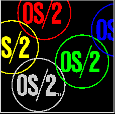

OS/2
2.x Frequently Asked Questions, Programmer's Edition
Version 3.4, June 4, 1995
Compiled by Andreas Almroth
Pre-3.x versions by Jeff M. Garzik
Pre-2.x versions by Barry Jaspan
Copyright (c) 1995 by Andreas Almroth
All Rights Reserved.
For changes, suggestions, or additions please mail andreas@traci.almroth.pp.se
or write to: Andreas Almroth
Fanrik Stals Gata 153
S-754 39 UPPSALA
SWEDEN
Mention of a product does not constitute an endorsement. Customers outside the United States should not necessarily rely on 800 telephone numbers, page numbers, part numbers, or upgrade policies contained in this List. Electronic mail addresses are in Internet form; use addressing appropriate to your mail system.
This FAQ is freely distributable for noncommercial purposes. (For commercial purposes, please contact the author.) If you redistribute the FAQ, please include all the original files.
This FAQ is updated quarterly and is distributed through various computer networks and online services, including the Internet and many BBSes.
Both ASCII text and OS/2 Information Presentation Facility (INF) versions of the FAQ are provided. To view the INF version of the List, go to any OS/2 command line prompt (e.g. double click on "OS/2 Window") and type:
VIEW PROGFAQ.INF
The ASCII text version may be viewed using any text editor, word processor, or file listing utility. The text version is intended to answer any questions you may have before actually obtaining and using OS/2. You will find that the INF version provides a much more attractive interface, with hypertext links, fast indexing, and, increasingly, illustrations.
If you have not received all three files (README.CMD, PROGFAQ.INF, and PROGFAQ.TXT), please ask your system operator to make sure he/she is receiving the correct and complete package.
Many of the answers in this FAQ refer to anonymous ftp site FTP-OS2.CDROM.COM
(192.153.46.2). The name 'cdrom.com' is used as a shorthand to refer to
this site. It has become, by default, the Internet storehouse for OS/2
files. If you cannot get files from this site (for whatever reason), then
check OS/2 Software Sources for
a source near you. You may find a more convenient method of getting files
than from cdrom.com. (Non-US readers will note
ftp.luth.se, is the main overseas FTP site.)
Related Information:
Release Notes
OS/2 Software Sources
Obtaining this FAQ / Contacting
the Author